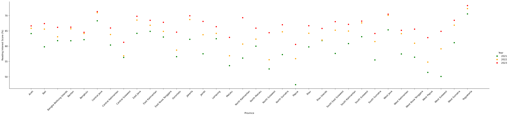
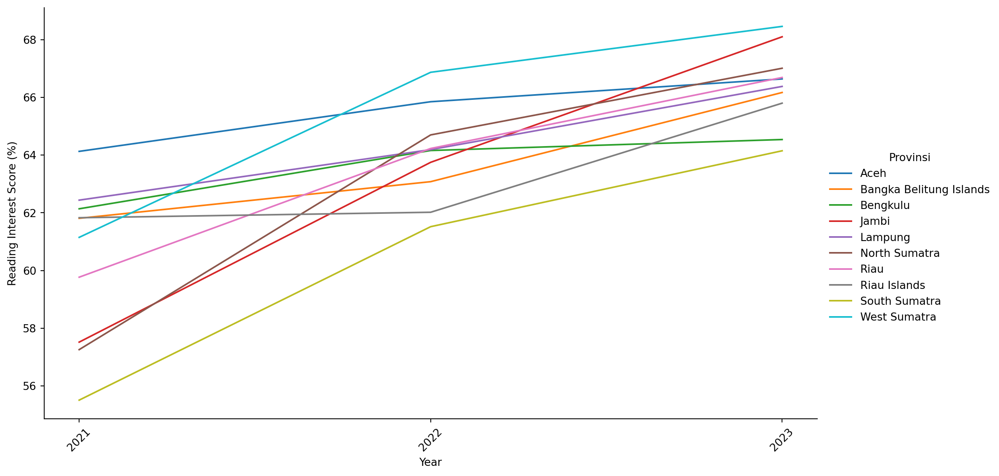
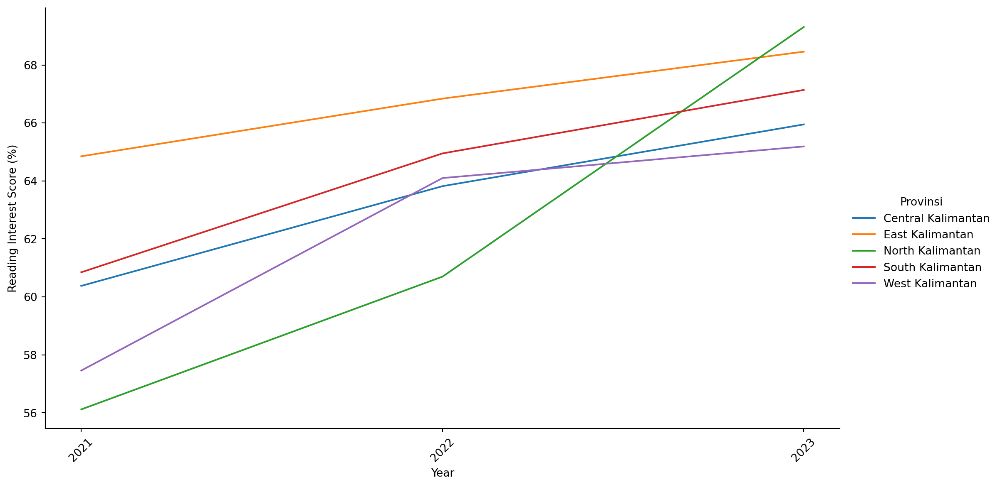
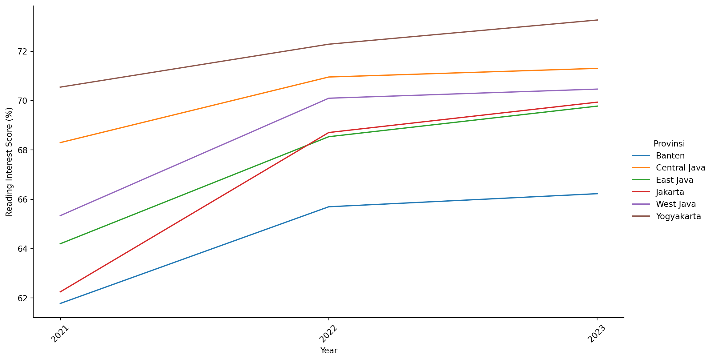
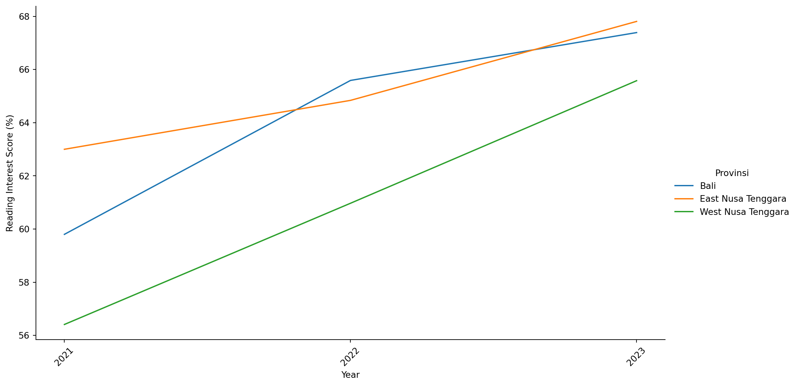
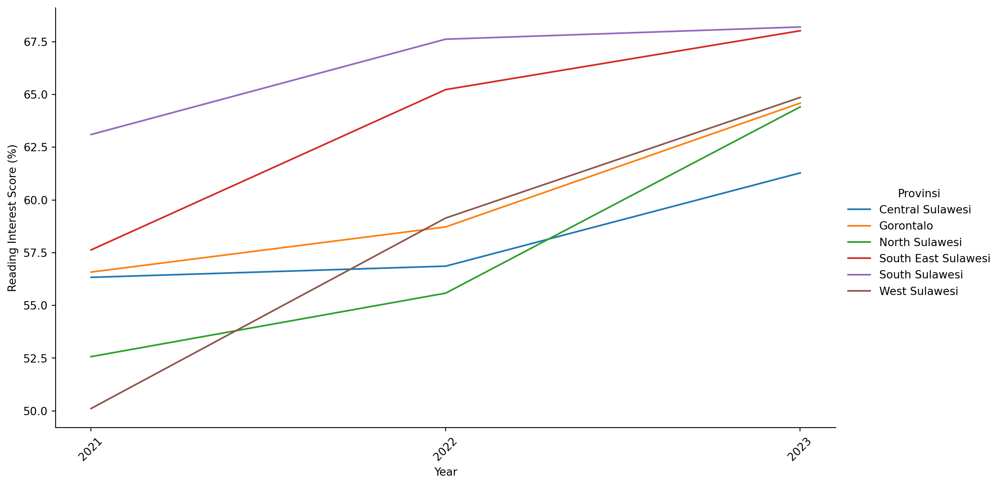
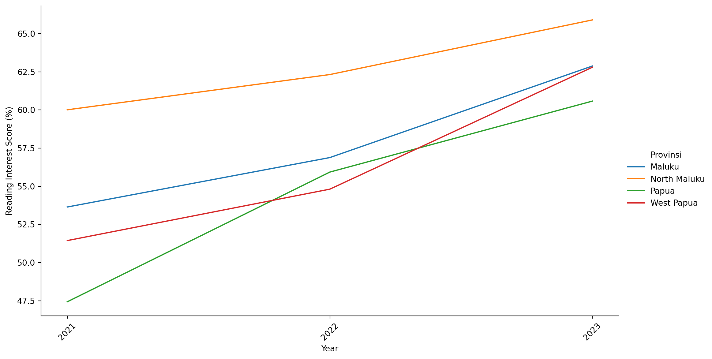
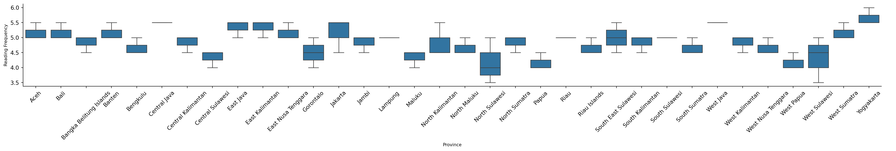
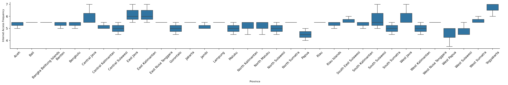
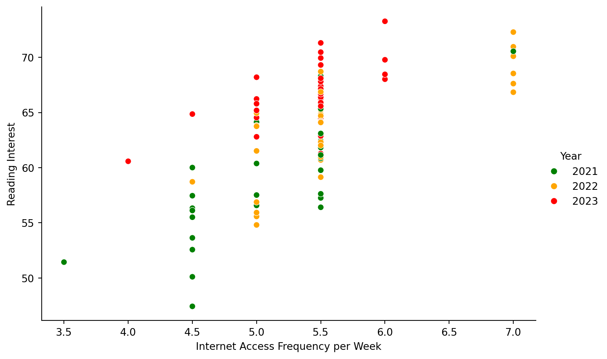
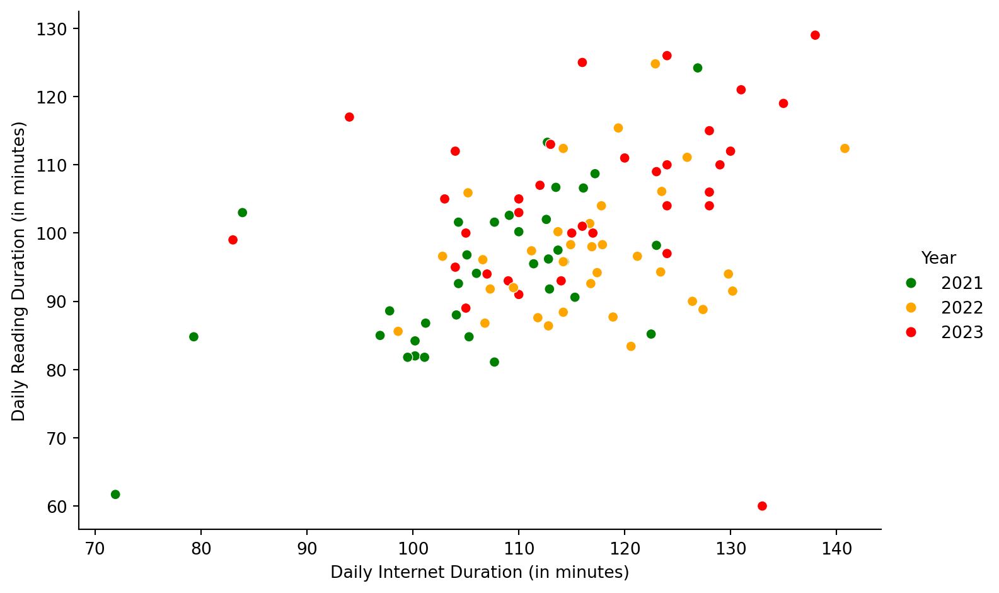
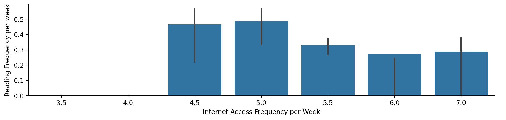
Year 2021 2022 2023
Category
High 15 27 0
Moderate 19 7 34 Provinsi Year Reading Frequency per week Number of Readings per Quarter Daily Reading Duration (in minutes) Internet Access Frequency per Week Daily Internet Duration (in minutes) Tingkat Kegemaran Membaca (Reading Interest) Category
1 Aceh 2021 5.5 4.5 103.0 5.0 83.9 64.13 High
2 Aceh 2022 5.0 5.5 94.3 5.5 123.4 65.85 High
3 Aceh 2023 5.0 5.5 95.0 5.5 104.0 66.64 Moderate
5 Bali 2021 5.5 4.5 82.0 5.5 100.2 59.80 Moderate
6 Bali 2022 5.0 5.5 98.0 5.5 116.9 65.59 High
7 Bali 2023 5.0 5.5 100.0 5.5 117.0 67.39 Moderate
8 Bangka Belitung Islands 2021 4.5 4.5 101.6 5.5 104.3 61.81 High
9 Bangka Belitung Islands 2022 5.0 5.5 85.6 5.5 98.6 63.08 High
10 Bangka Belitung Islands 2023 5.0 6.0 93.0 5.5 109.0 66.17 Moderate
13 Banten 2021 5.0 4.5 100.2 5.5 110.0 61.78 High
14 Banten 2022 5.0 5.5 97.4 5.5 111.2 65.70 High
15 Banten 2023 5.5 5.5 93.0 5.0 114.0 66.23 Moderate
17 Bengkulu 2021 4.5 4.5 98.2 5.5 123.0 62.14 High
18 Bengkulu 2022 5.0 5.5 92.6 5.5 116.8 64.16 High
19 Bengkulu 2023 4.5 5.0 106.0 5.0 128.0 64.54 Moderate
21 Central Java 2021 5.5 4.5 124.2 5.5 126.9 68.30 High
22 Central Java 2022 5.5 5.5 124.8 7.0 122.9 70.96 High
23 Central Java 2023 5.5 6.0 110.0 5.5 129.0 71.31 Moderate
25 Central Kalimantan 2021 4.5 4.0 113.3 5.0 112.7 60.38 Moderate
26 Central Kalimantan 2022 5.0 5.5 96.6 5.0 102.8 63.82 High
27 Central Kalimantan 2023 5.0 5.5 91.0 5.5 110.0 65.95 Moderate
29 Central Sulawesi 2021 4.5 4.0 85.0 4.5 96.9 56.33 Moderate
30 Central Sulawesi 2022 4.0 4.5 87.6 5.0 111.8 56.86 Moderate
31 Central Sulawesi 2023 4.5 5.5 89.0 5.5 105.0 61.28 Moderate
33 East Java 2021 5.5 4.5 102.0 5.5 112.6 64.20 High
34 East Java 2022 5.5 5.5 106.1 7.0 123.5 68.54 High
35 East Java 2023 5.0 5.5 115.0 6.0 128.0 69.78 Moderate
37 East Kalimantan 2021 5.5 4.5 91.8 5.5 112.9 64.85 High
38 East Kalimantan 2022 5.5 5.5 94.2 7.0 117.4 66.84 High
39 East Kalimantan 2023 5.0 5.5 109.0 6.0 123.0 68.46 Moderate
41 East Nusa Tenggara 2021 5.0 4.5 95.8 5.5 114.3 63.00 High
42 East Nusa Tenggara 2022 5.0 5.5 90.0 5.5 126.4 64.84 High
43 East Nusa Tenggara 2023 5.5 5.0 111.0 5.5 120.0 67.81 Moderate
45 Gorontalo 2021 4.5 3.5 96.2 5.0 112.8 56.58 Moderate
46 Gorontalo 2022 4.0 4.5 101.4 4.5 116.7 58.72 Moderate
47 Gorontalo 2023 5.0 4.5 121.0 5.5 131.0 64.59 Moderate
53 Jakarta 2021 4.5 4.5 101.6 5.5 107.7 62.25 High
54 Jakarta 2022 5.5 5.5 112.4 5.5 114.2 68.71 High
55 Jakarta 2023 5.5 5.0 126.0 5.5 124.0 69.94 Moderate
57 Jambi 2021 4.5 4.0 88.6 5.0 97.8 57.52 Moderate
58 Jambi 2022 5.0 5.0 98.3 5.0 114.9 63.75 High
59 Jambi 2023 5.0 5.5 112.0 5.5 130.0 68.10 Moderate
61 Lampung 2021 5.0 4.5 86.8 5.5 101.2 62.44 High
62 Lampung 2022 5.0 5.5 96.1 5.5 106.6 64.19 High
63 Lampung 2023 5.0 5.5 94.0 5.5 107.0 66.38 Moderate
65 Maluku 2021 4.5 3.5 81.8 4.5 99.5 53.64 Moderate
66 Maluku 2022 4.0 5.0 83.4 5.0 120.6 56.88 Moderate
67 Maluku 2023 4.5 5.0 97.0 5.5 124.0 62.88 Moderate
69 North Kalimantan 2021 4.5 3.5 95.5 4.5 111.4 56.12 Moderate
70 North Kalimantan 2022 4.5 5.0 88.4 5.5 114.2 60.70 High
71 North Kalimantan 2023 5.5 5.5 113.0 5.5 113.0 69.31 Moderate
73 North Maluku 2021 4.5 4.0 102.6 4.5 109.1 60.01 Moderate
74 North Maluku 2022 4.5 4.5 112.4 5.5 140.8 62.32 High
75 North Maluku 2023 5.0 5.0 60.0 5.5 133.0 65.90 Moderate
77 North Sulawesi 2021 3.5 3.5 84.8 4.5 105.3 52.57 Moderate
78 North Sulawesi 2022 4.0 4.5 87.7 5.0 118.9 55.58 Moderate
79 North Sulawesi 2023 5.0 5.0 104.0 5.5 124.0 64.41 Moderate
81 North Sumatra 2021 4.5 4.0 94.1 5.5 106.0 57.26 Moderate
82 North Sumatra 2022 5.0 5.0 100.2 5.5 113.7 64.70 High
83 North Sumatra 2023 5.0 5.5 105.0 5.5 110.0 67.01 Moderate
85 Papua 2021 4.0 3.0 61.7 4.5 71.9 47.43 Moderate
86 Papua 2022 4.0 4.5 91.5 5.0 130.2 55.93 Moderate
87 Papua 2023 4.5 5.0 99.0 4.0 83.0 60.58 Moderate
89 Riau 2021 5.0 4.0 90.6 5.5 115.3 59.77 Moderate
90 Riau 2022 5.0 5.5 95.8 5.5 114.2 64.23 High
91 Riau 2023 5.0 5.5 100.0 5.5 115.0 66.69 Moderate
93 Riau Islands 2021 4.5 4.5 97.5 5.5 113.7 61.83 High
94 Riau Islands 2022 4.5 5.0 94.0 5.5 129.8 62.02 High
95 Riau Islands 2023 5.0 5.0 112.0 5.0 104.0 65.80 Moderate
97 South East Sulawesi 2021 4.5 3.5 85.2 5.5 122.5 57.63 Moderate
98 South East Sulawesi 2022 5.0 5.5 96.6 5.5 121.2 65.23 High
99 South East Sulawesi 2023 5.5 5.5 101.0 6.0 116.0 68.02 Moderate
101 South Kalimantan 2021 5.0 4.5 92.6 5.5 104.3 60.85 Moderate
102 South Kalimantan 2022 4.5 5.5 105.9 5.0 105.2 64.95 High
103 South Kalimantan 2023 5.0 5.5 103.0 5.5 110.0 67.14 Moderate
105 South Sulawesi 2021 5.0 4.5 106.7 5.5 113.5 63.10 High
106 South Sulawesi 2022 5.0 5.5 98.3 7.0 117.9 67.62 High
107 South Sulawesi 2023 5.0 5.5 125.0 5.0 116.0 68.20 Moderate
109 South Sumatra 2021 4.5 4.0 84.2 4.5 100.2 55.51 Moderate
110 South Sumatra 2022 4.5 5.0 92.0 5.0 109.5 61.52 High
111 South Sumatra 2023 5.0 5.0 105.0 5.5 103.0 64.15 Moderate
113 West Java 2021 5.5 4.5 108.7 5.5 117.2 65.34 High
114 West Java 2022 5.5 5.5 115.4 7.0 119.4 70.10 High
115 West Java 2023 5.5 5.5 119.0 5.5 135.0 70.47 Moderate
117 West Kalimantan 2021 4.5 3.5 96.8 4.5 105.1 57.46 Moderate
118 West Kalimantan 2022 5.0 5.5 91.8 5.5 107.3 64.10 High
119 West Kalimantan 2023 5.0 5.5 107.0 5.0 112.0 65.19 Moderate
121 West Nusa Tenggara 2021 4.5 3.5 81.1 5.5 107.7 56.41 Moderate
122 West Nusa Tenggara 2022 4.5 5.0 88.8 5.5 127.4 60.97 High
123 West Nusa Tenggara 2023 5.0 5.5 100.0 5.5 105.0 65.58 Moderate
125 West Papua 2021 4.0 3.5 84.8 3.5 79.3 51.44 Moderate
126 West Papua 2022 4.0 4.5 86.8 5.0 106.8 54.81 Moderate
127 West Papua 2023 4.5 4.5 110.0 5.0 124.0 62.80 Moderate
129 West Sulawesi 2021 3.5 3.0 81.8 4.5 101.1 50.11 Moderate
130 West Sulawesi 2022 4.5 5.0 86.4 5.5 112.8 59.14 Moderate
131 West Sulawesi 2023 5.0 4.5 117.0 4.5 94.0 64.86 Moderate
133 West Sumatra 2021 5.0 4.5 88.0 5.5 104.1 61.15 High
134 West Sumatra 2022 5.0 5.5 104.0 5.5 117.8 66.87 High
135 West Sumatra 2023 5.5 5.5 104.0 6.0 128.0 68.46 Moderate
137 Yogyakarta 2021 6.0 5.5 106.6 7.0 116.1 70.55 High
138 Yogyakarta 2022 5.5 7.0 111.1 7.0 125.9 72.29 High
139 Yogyakarta 2023 5.5 5.5 129.0 6.0 138.0 73.27 Moderate